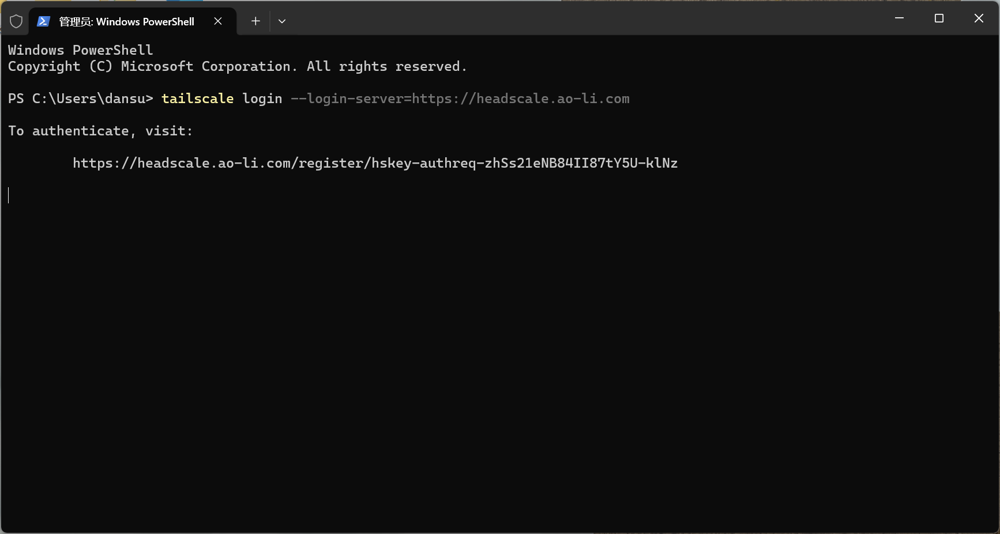
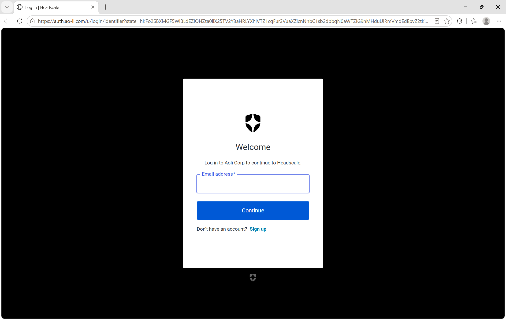
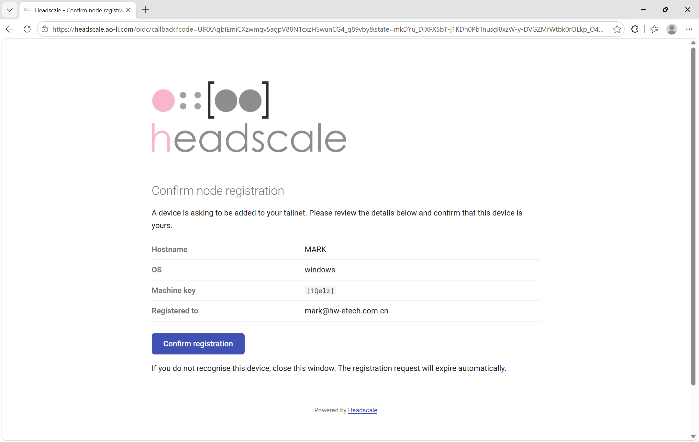
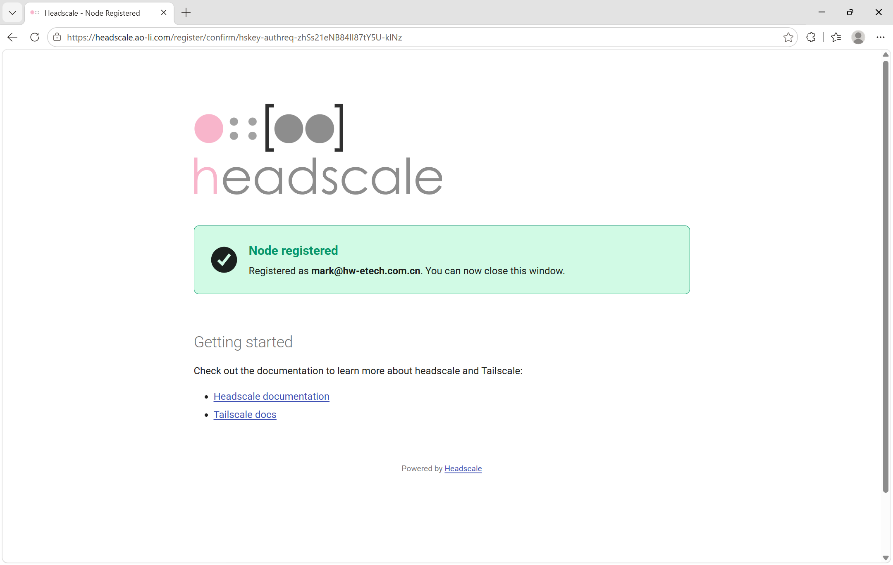

连接公司内网
准备
电脑能上网，并有 @hw-etech.com.cn 公司邮箱。
Windows 设置
- 安装并打开 Tailscale Windows 版。
- 按 Windows 键，输入 PowerShell，打开 Windows PowerShell。粘贴以下命令并按回车：
tailscale login --login-server=https://headscale.ao-li.com
- 按住 Ctrl，点击 PowerShell 中的登录链接。若无法打开，将完整链接复制到浏览器。然后在 auth.ao-li.com 使用公司邮箱登录。

- 确认设备和邮箱是自己的，点击 Confirm registration（确认注册）。

- 看到 Node registered（设备已注册） 后，关闭浏览器窗口。

- 返回 Tailscale，必要时点击 Connect（连接），确认显示 Connected（已连接）。
检查连接
Windows 用户在 PowerShell 中执行：
tailscale ping 100.64.0.1收到 pong 表示可以连接到服务器。
下次使用
打开 Tailscale，在账号菜单中选择公司邮箱，必要时点击 Connect（连接）。使用公司系统期间保持连接。
常见问题
- 找不到命令：确认 Tailscale 已安装并运行，再重新打开 PowerShell。
- 登录页面不对：重新执行上面的完整登录命令。
- 登录失败：使用公司邮箱，按提示完成邮箱验证。
- 测试无响应：检查网络、登录邮箱和 Tailscale 连接状态。
- 仍有问题：将错误提示和受影响的系统地址发给 IT。